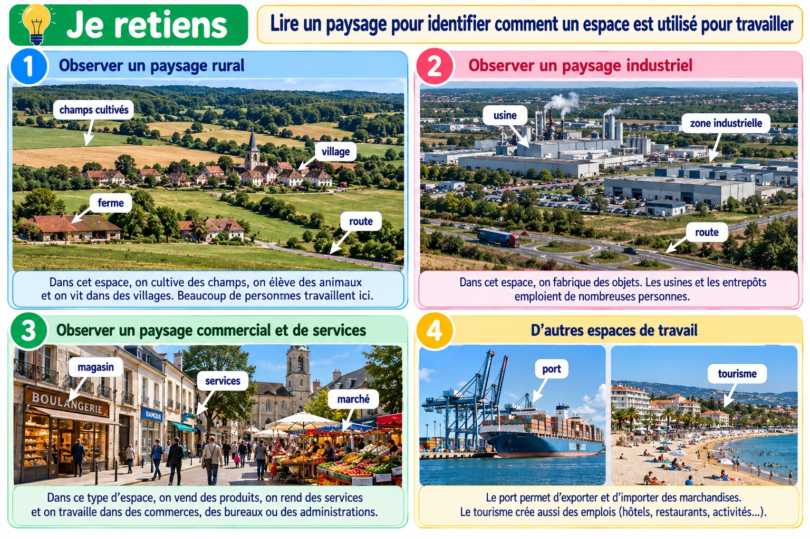

Lire un paysage pour identifier comment un espace est utilisé pour travailler
Les paysages gardent des traces visibles des activités des habitants.
Lire un paysage pour identifier comment un espace est utilisé pour travailler

Planche pédagogique composée d’images photoréalistes illustratives.
Chercher les indices
Les champs et les serres peuvent indiquer une activité agricole. Les ateliers, les entrepôts et les grues peuvent montrer des activités artisanales, industrielles ou de construction.
Observer l’organisation
Un espace de travail est organisé : parcelles cultivées, bâtiments, chemins d’accès, zones de stockage et voies pour les véhicules.
Décrire sans inventer
Je distingue ce que je vois de ce que je suppose : « Je vois des serres » est une observation ; « on y cultive peut-être des légumes » est une hypothèse à vérifier.
Je retiens
Pour comprendre un paysage de travail, j’observe ses bâtiments, ses équipements, ses parcelles et ses voies de circulation. Je sépare observations et hypothèses.